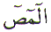
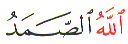
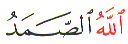

The Arabic Letter
Saad ( ) is one of the Muqattaat Letters.
That is it is used as a Letter at the start of a Chapter in the
Quran. The position of the Letter Saad (
) is one of the Muqattaat Letters.
That is it is used as a Letter at the start of a Chapter in the
Quran. The position of the Letter Saad ( )
in the normal Arabic character set is 14. In the numerical character
set, Abjad, Saad (
)
in the normal Arabic character set is 14. In the numerical character
set, Abjad, Saad ( ) has the value
of 90. The position of the Letter Saad (
) has the value
of 90. The position of the Letter Saad ( )
in Abjad format is 18. This article is about the spiritual meaning
of the Letter Saad (
)
in Abjad format is 18. This article is about the spiritual meaning
of the Letter Saad ( ).
).
The Letter Saad ( ) is used as a Muqattaat Letter in
the Quran three times. The first usage is as follows:
) is used as a Muqattaat Letter in
the Quran three times. The first usage is as follows:
From the above reference
we can see that the Letter Saad ( )
is used for Sadr meaning
'heart, in the above verse' or Chest.
)
is used for Sadr meaning
'heart, in the above verse' or Chest.
We have all heard the expression : "Get it off your chest !" Meaning "What is your problem ?" Meaning "Tell me your problem."
But, Allah Knows the
secrets we hide in our hearts or in the Sadr or chest. Therefore Allah did not need to
ask, but He revealed A
BOOK (Chapter 7 Verse
2) so that there would be no heaviness in the heart of His Beloved,
Muhammad  . What was causing the heaviness
? The difficulty of turning a nation of idol worshippers to Muslims.
The difficulty of explaining that idol worshipping is a grave
mistake which will be rewarded by punishment in hell. The difficulty
of spreading the Message of Allah to all the nations since there
would be no more Messengers of Allah after Muhammad
. What was causing the heaviness
? The difficulty of turning a nation of idol worshippers to Muslims.
The difficulty of explaining that idol worshipping is a grave
mistake which will be rewarded by punishment in hell. The difficulty
of spreading the Message of Allah to all the nations since there
would be no more Messengers of Allah after Muhammad .
The difficulty of 'showing' the people that Al Sirat al Mustaqeem THE PATH THAT IS
STRAIGHT is the best way.
.
The difficulty of 'showing' the people that Al Sirat al Mustaqeem THE PATH THAT IS
STRAIGHT is the best way.
Not only that, being
a Messenger of Allah was not an easy task for any of them. There
is no running away. Remember Yunus ( )
whose title is Zaan-Noon?
)
whose title is Zaan-Noon?
Therefore, Allah revealed A BOOK to overcome this difficulty. What was that Book ? The Quran would have been THE BOOK (Al Kitab) not A BOOK (Kitabun). The 'BOOK' in question is the Letters ALIF LAAM MEEM SAAD 
What turns a Nafs Ammarah the reckless soul to the Nafs Lawwamah the restless soul ? And what turns the Nafs Lawwamah to Nafs Mutmainnah the PEACEFUL soul ? It is Sabr Patience.
Sabr is a quality of endurance. Sabr is a quality where a person is not easily provoked. Sabr is a quality where a person is not hasty.

The thing about Sabr is that it comes with time. Very few are born with it. As we have all observed that a baby that is hungry starts crying. When the baby grows up to be a child, Sawm Fast or Siyyam Fasting becomes necessary. Why ?
To break this habit of impatience. Fasting is necessary. Fasting is a means for us to learn Sabr Patience. If the reward for Fasting is with Allah then what about the reward for Sabr ? That is also with Allah.
But there is catch ! Sabr is only valid in this world not in the next world ! How can that be ?
It is stated in the Quran:
Since we mentioned fasting, now let us consider fasting.
Sawm A Fast, is something very personal. Fasting is a trust between the person who is fasting and Allah. Nobody else. The only thing stopping a fasting person from indulging in that which is prohibited from dawn to dusk is trust. That trust can only be kept by the one who is fasting. Therefore, fasting is for Allah. And the reward is from Allah. Fasting is not just abstaining from food and drink, but the fast also applies to eyes, ears, hands and feet.
There is a very important
little anecdote with a lesson in Kashf Al Mahjub by Ali bin Usman
al Hujwiri ( ):
):
Now Let us go back to
the Letter Saad ( ). It was mentioned
at the start of this article that the Letter Saad (
). It was mentioned
at the start of this article that the Letter Saad ( )
is used three times as a Muqattaat Letter. The first use is in
Al Aaraf Chapter 7 as shown at the top. The other two occurrences
are as follows:
)
is used three times as a Muqattaat Letter. The first use is in
Al Aaraf Chapter 7 as shown at the top. The other two occurrences
are as follows:

The interesting point
about all these three references where the Letter Saad ( ) is used as a Muqattaat Letter is that
the word Zikr appears. The Letter Saad (
) is used as a Muqattaat Letter is that
the word Zikr appears. The Letter Saad ( ) is connected with the Letter Zal () .
) is connected with the Letter Zal () .
The Letter Saad ( ) is connected to the Zikr (). But which Zikr ?
Remember Zaan-Noon, Yunus
(
) is connected to the Zikr (). But which Zikr ?
Remember Zaan-Noon, Yunus
( ) ?
) ?
What was the Zikr of Zaan-Noon ?

What do we call this
Verse ? Ayat KAREEM . Where
have we seen the Letter Kaaf ( ) before
? The Letter Kaaf (
) before
? The Letter Kaaf ( ) is only used once
as a Muqattaat Letter in Chapter 19 (Maryam) Verse 1 where
the Letter Saad (
) is only used once
as a Muqattaat Letter in Chapter 19 (Maryam) Verse 1 where
the Letter Saad ( ) completes
these 5 Letters.
) completes
these 5 Letters.
To show the connection
between Letter Saad ( ),
Zaan-Noon and the above five Letters (
),
Zaan-Noon and the above five Letters (


 ) we
find in the Quran: Chapter 21, Verse 89 mentions Zakariya (
) we
find in the Quran: Chapter 21, Verse 89 mentions Zakariya ( ), and if we still cannot see the
connection, Allah gives us two more clues in Verse 91.
), and if we still cannot see the
connection, Allah gives us two more clues in Verse 91.
Notice Verse 91 the final
clue, is 19 backwards. That is the second clue. And what is the
name of Chapter 19 ? Maryam ( ). How
does Chapter Maryam start ?
). How
does Chapter Maryam start ?
Yunus ( )
was in the belly of the fish for 3 days and 3 nights. The Letter
Saad (
)
was in the belly of the fish for 3 days and 3 nights. The Letter
Saad ( ) is used as a Muqattaat Letter
3 times.
) is used as a Muqattaat Letter
3 times.
Yunus ( )
received the reward in 3 days and 3 nights. And we must all remember
the following concerning Yunus (
)
received the reward in 3 days and 3 nights. And we must all remember
the following concerning Yunus ( ):
):
In our case it takes
longer. None of us is innocent as the Messengers of Allah ( ). Therefore in our case it takes
longer, so we must not give up hope. We must be patient. Insha
Allah, Allah will not hold back the reward for patience. With
patience we must do Zikr Allah. Which Zikr ?
How about Ayat Kareem ? Or how about Allahu Samad [Chapter 112 Verse 2]? Sadr is the place of
Knowledge. It is where one comprehends. Impatience stems from
not knowing. Sabr is achieved
by comprehending.
). Therefore in our case it takes
longer, so we must not give up hope. We must be patient. Insha
Allah, Allah will not hold back the reward for patience. With
patience we must do Zikr Allah. Which Zikr ?
How about Ayat Kareem ? Or how about Allahu Samad [Chapter 112 Verse 2]? Sadr is the place of
Knowledge. It is where one comprehends. Impatience stems from
not knowing. Sabr is achieved
by comprehending.
May Allah teach us all Patience and have Mercy on us all. May Allah make us comprehend. May Allah reward our Patience. Ameen.
| BACK |